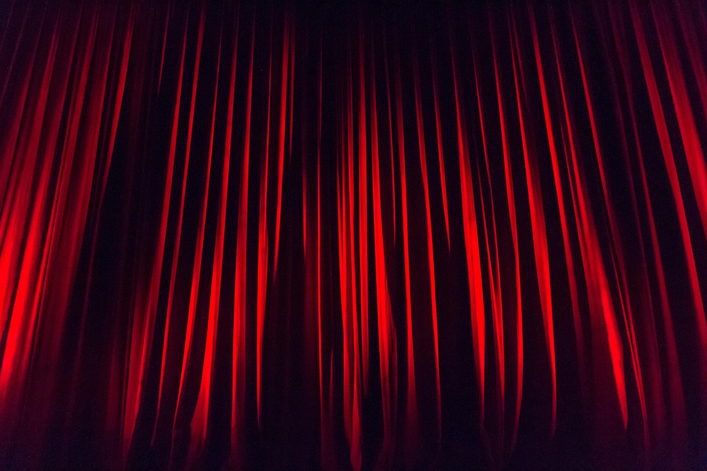
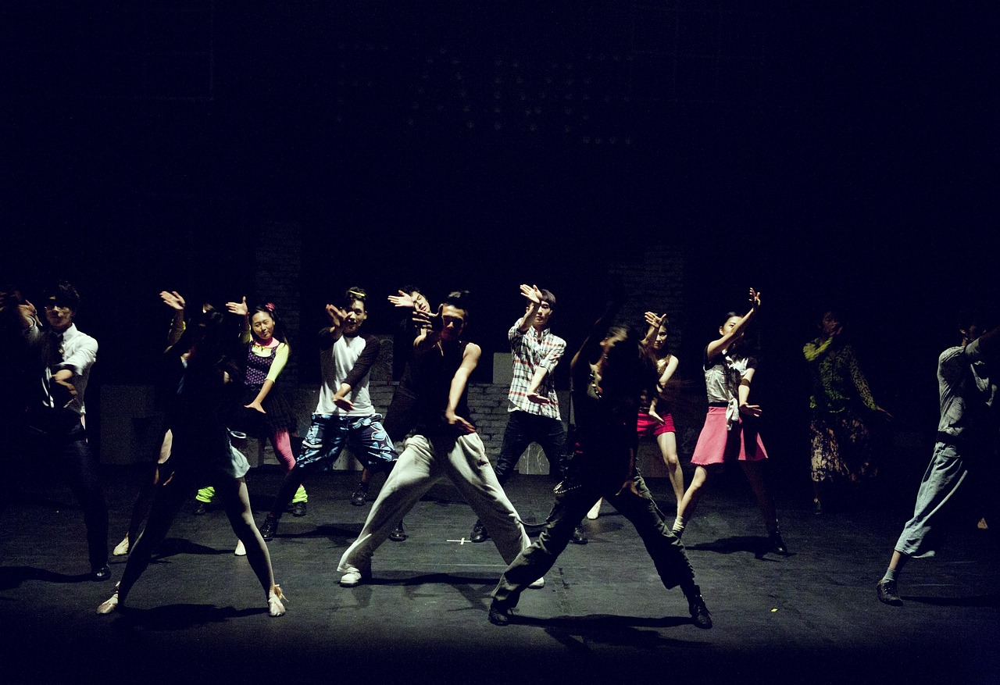

|

Τα μαθήματα θεάτρου που διάσκονται είναι τα ακόλουθα:
- Υποκριτική
Στόχος: Να μάθεις να ζεις τον ρόλο,
όχι απλά να τον "παίζεις".
Θα μάθεις: τεχνικές ερμηνείας,
ανάλυση χαρακτήρα, αυτοσχεδιασμό, σκηνική παρουσία.
Επίπεδο:
Αρχάριοι – Προχωρημένοι
Διάρκεια:
Εβδομαδιαία μαθήματα, όλη τη χρονιά
- Υποκριτική Ι
- Υποκριτική ΙΙ
- Υποκριτική μπροστά στην κάμερα
- Αυτοσχεδιασμός
- Σωματικό Θέατρο
- Φωνή & Λόγος
Στόχος:
Να κάνεις τη φωνή σου εργαλείο
έκφρασης και δύναμης.
Θα μάθεις:
άρθρωση, σωστή αναπνοή, ένταση,
χροιά και καθαρή εκφορά λόγου.
Επίπεδο:
Όλα τα επίπεδα
Διάρκεια:
Εβδομαδιαία
- Ορθοφωνία
- Αναπνοή και Στήριξη φωνής
- Ανάγνωση και απαγγελία
- Θεατρική Γραφή
Στόχος:
Να μετατρέπεις ιδέες σε
ζωντανούς διαλόγους και
σκηνές.
Θα μάθεις:
δομή έργου, χαρακτήρες, πλοκή,
θεατρικό διάλογο.
Επίπεδο:
Αρχάριοι & Προχωρημένοι
Διάρκεια:
Εβδομαδιαία
- Θεατρική γραφή
- Δημιουργία χαρακτήρων
- Διάλογος στη σκηνή
- Διασκευή λογοτεχνικών έργων για το θέατρο
- Μονόλογοι
- Άλλα μαθήματα
- Σκηνοθεσία θεάτρου
- Σκηνοθεσία τηλεόρασης
- Θεατρικό παιχνίδι

- Μαθήματα Χορού
Στόχος:
Να μάθεις να μιλάς με
το σώμα σου.
Θα μάθεις:
σωματική έκφραση, ρυθμό,
ισορροπία, σκηνική κίνηση.
Επίπεδο:
Όλα τα επίπεδα
Διάρκεια:
Εβδομαδιαία
- Κλασικό μπαλέτο
- Σύγχρονος χορός
- Jazz
- Hip Hop
- Latin
- Flamenco
|